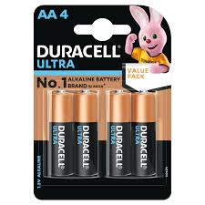
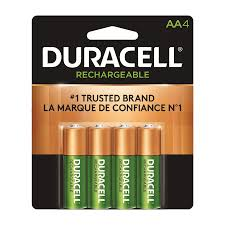

Single-Use Batteries
A single-use battery, also known as a primary battery, is designed for one-time use and cannot be recharged.

- Resources/Materials: The anode is often made from zinc, while the cathode is commonly composed of manganese dioxide. The battery casing is typically made of steel, and electrolytes like potassium hydroxide or ammonium chloride.
- Uses of Single-Use: Remote controls, flashlights, toys, clocks, hearing aids, and smoke detectors.
- Cost Effectiveness: Typically cost-effective for devices that require low to moderate power over short periods.
Rechargeable Batteries

Rechargeable batteries are designed for multiple uses, as they can be recharged and used again after their energy is depleted.
- Resources/Materials: The anode of rechargeable batteries is typically made from graphite, while the cathode is often composed of cobalt or manganese. The battery casing is generally made from steel, and the electrolyte consists of lithium salts or nickel compounds.
- Uses of Single-Use: Smartphones, laptops, tablets, electric vehicles, cameras, and power tools.
- Cost Effectiveness: Rechargeable batteries are more cost-effective over time compared to single-use batteries because they can be reused hundreds or thousands of times. Though they have a higher upfront cost.
Where to Recycle Batteries?
You can often recycle batteries at:
- Electronics retailers
- Local recycling centers
- Municipal waste collection programs
Make sure to check your local community guidelines for proper drop-off locations and rules.
Find a Recycling Center Near You